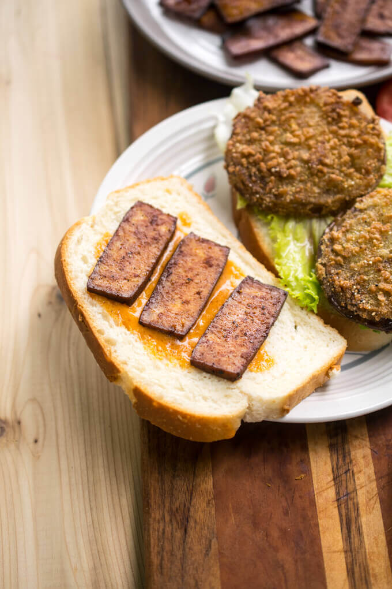

Tofu Bacon

Easy recipe for tofu bacon, not quite like the original, but still tasty!
Click here
for the original recipe.
Ingredients:
- 8 oz extra-firm or super-firm tofu
- 1/4 cup low-sodium soy sauce (use tamari for gluten-free)
- 1 tbsp maple syrup
- 1 tbsp tomato paste
- 1 tbsp liquid smoke
- 1 tsp apple cider vinegar
- 1/2 tsp ground black pepper
- 1/4 tsp smoked paprika
- 1/4 tsp onion powder
- 1/4 tsp garlic powder
- 2 tsp olive oil
Instructions
- Drain the tofu. If not using vacuum packed super-firm tofu, wrap it in a clean towel and stack a heavy object (like a cast iron pan) on top of it to press out excess liquid. (Or, use a tofu press if you've got one). Leave the tofu to press while you measure out the other ingredients.
- Preheat the oven to 400 degrees Fahrenheit. Place a metal rack on top of a baking sheet and lightly grease it. (If desired, put a piece of parchment on the baking sheet to catch drips, for easy cleanup).
- Whisk together the remaining ingredients in a medium sized bowl.
- Cut the tofu into thin strips, approximately 1/8 inch thick. Take each tofu slice and dip it fully into the marinade, then place it on the prepared baking rack. Repeat until all of the tofu slices are dipped, spacing them out evenly on the rack. Set aside the excess marinade.
- Bake for 10 minutes. Remove the baking sheet from the oven. Gently flip over each piece of tofu. Brush or dab the tops of each tofu piece with some of the remaining marinade. Return to the oven and bake for another 5 to 10 minutes, or until browning around the edges and starting to take on a firm texture - it can burn quickly so keep a close eye on it. Remove from the oven, let cool, and enjoy!